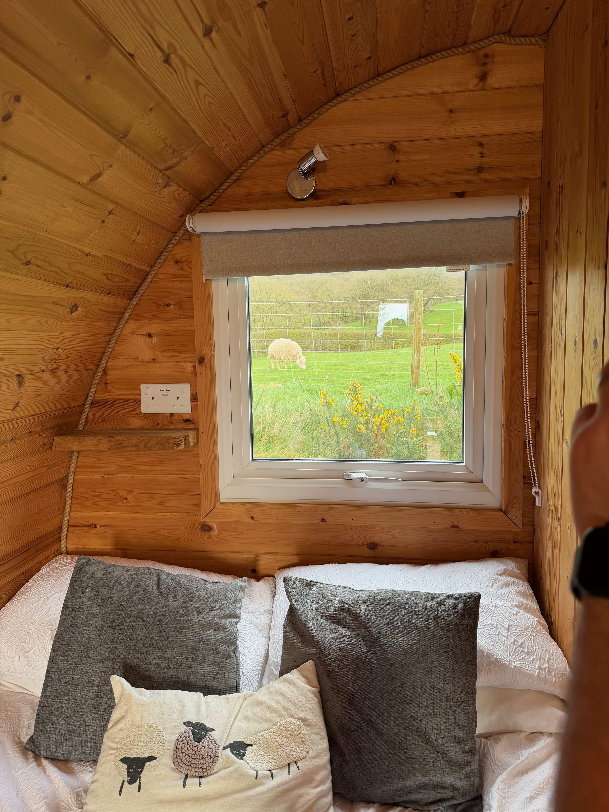
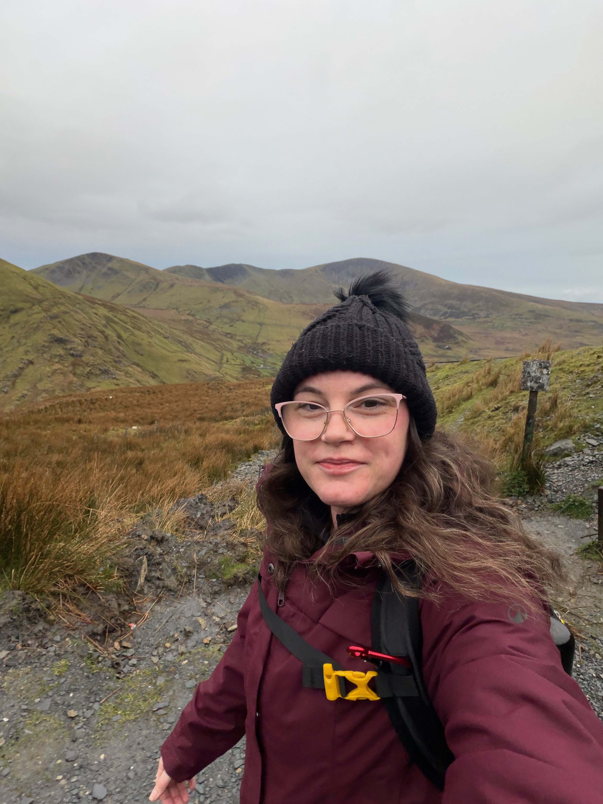
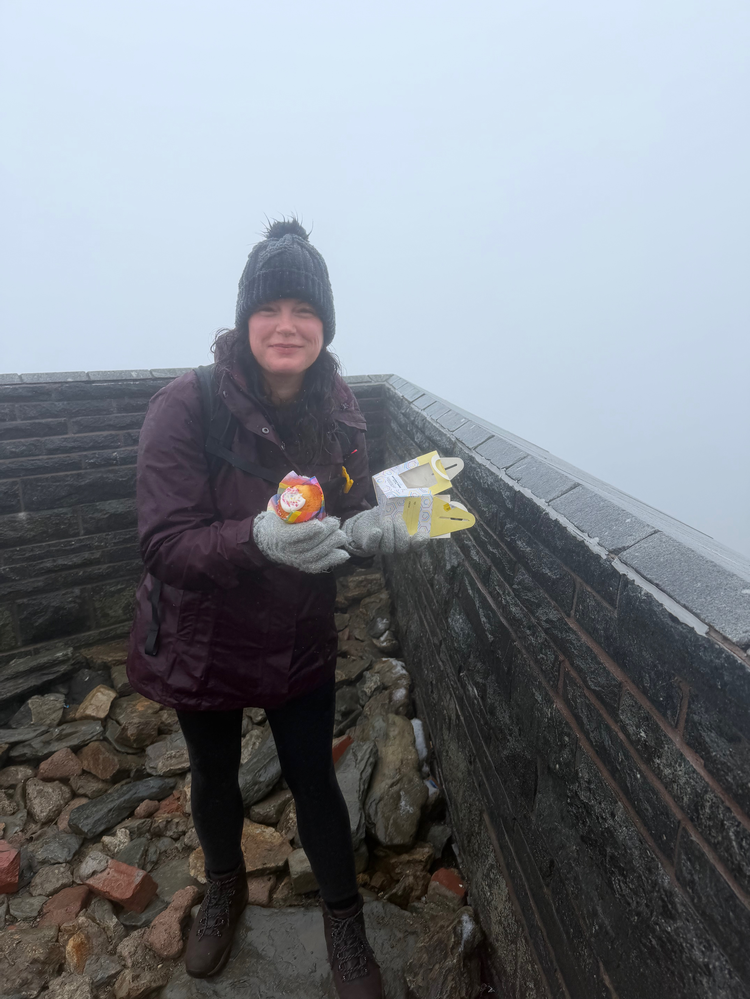
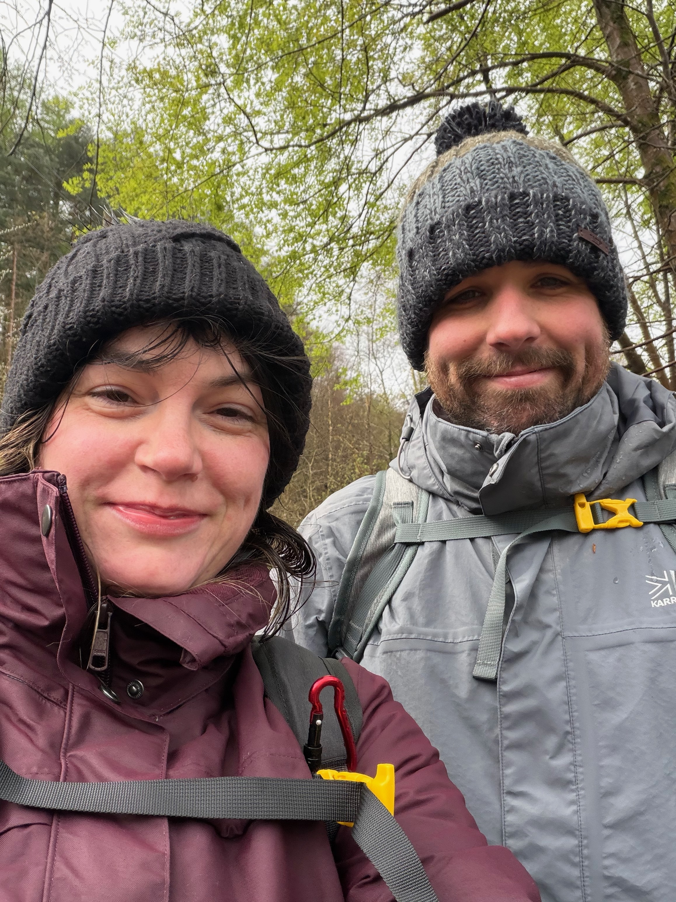

A slightly unusual birthday trip
For my birthday, we decided to do something a little different. Rather than a traditional birthday day out, we packed our bags and headed off for a few days in a cosy log cabin.
The cabin itself was part of the adventure. It was surrounded by countryside, which meant that rather than waking up to traffic and alarms, we woke up to the sounds of the outdoors.
Including sheep.
Lots of sheep.
There is something slightly surreal about going to sleep in a log cabin knowing that a flock of sheep is basically your next-door neighbour.

Birthday hike, 4am-ish
On my actual birthday, we got up in the early hours and set off to hike Snowdon.
Getting out of a warm bed at that time of the morning wasn't exactly easy, but the excitement of the hike definitely helped.
What we hadn't quite bargained for was the weather.
Storm Dave had other plans.
The wind made the hike considerably harder than it otherwise would have been. Every section seemed to require a little more effort, and the conditions made the whole experience feel much more dramatic.
But honestly, that was part of what made it memorable.
The journey up
Hiking in the early hours gave everything a completely different atmosphere. The weather was wild, the wind was relentless in places and there was a definite sense of adventure about the whole thing.

Birthday cake at the summit
Eventually, we made it to the summit.
And that's when my husband produced the biggest surprise of the day.
A birthday cake.
Well... technically a cupcake.
It had spent the entire hike hidden inside his bag, which meant that by the time it reached the summit it had seen better days.
It was a little bit squished.
But standing on top of Snowdon on my birthday, in the middle of all that weather, and eating a slightly battered cupcake was honestly perfect.

The way back down
After enjoying the summit, it was time to head back down.
The descent was tiring in a completely different way. We'd already put in the hard work on the way up, and the weather had made the whole hike more demanding than expected.
But there was something satisfying about looking back and realising we'd actually done it.
The best hot tub I've ever had
Once we finally made it back to the cabin, there was only one sensible thing to do.
Hot tub.
After a long hike in stormy weather, getting into a warm hot tub was absolute heaven.
It was the perfect way to finish the day: tired legs, a memorable adventure and absolutely no need to walk anywhere else for a while.
One to remember
It probably wasn't the easiest birthday I've ever had, but it was definitely one of the most memorable.
A log cabin, sheep outside the window, an early-morning hike up Snowdon, Storm Dave trying to make things difficult, a squashed cupcake at the summit and a relaxing hot tub afterwards.
Not a bad way to spend a birthday.
